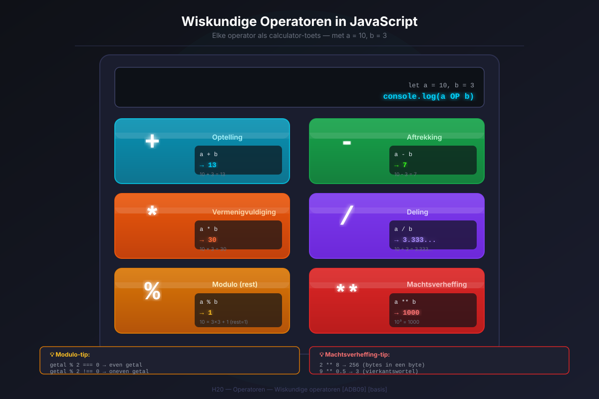
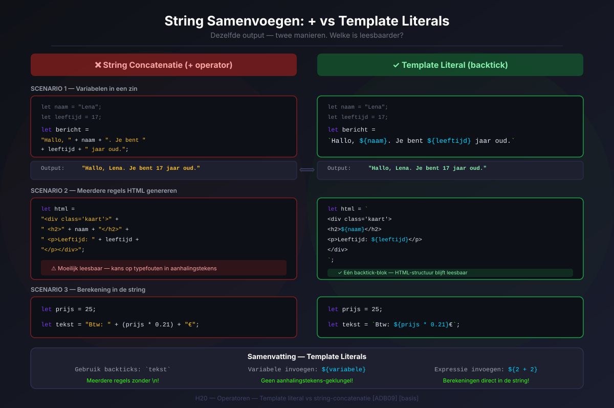
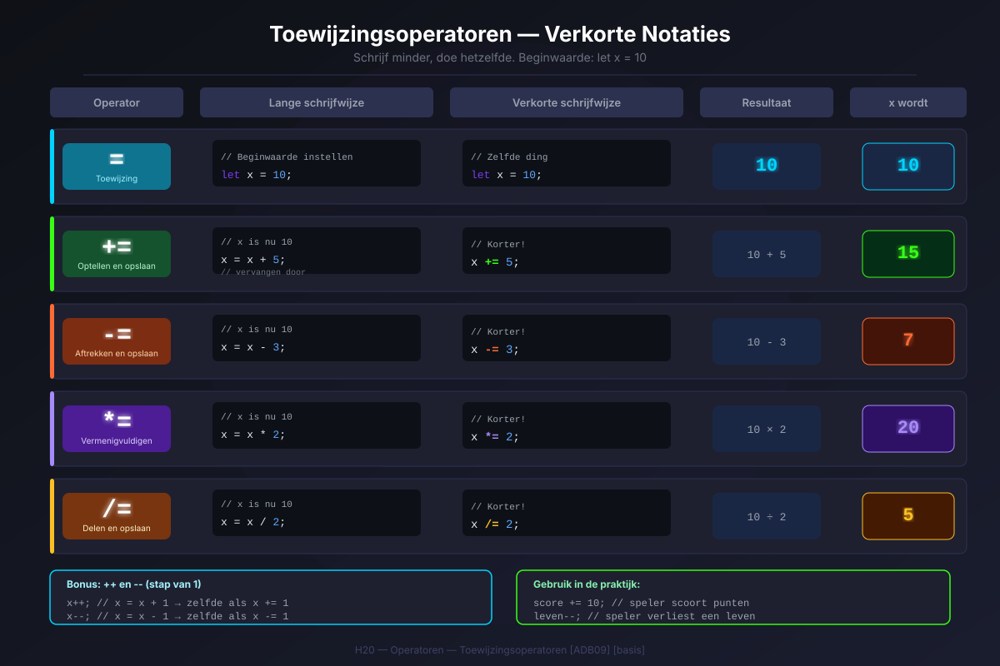
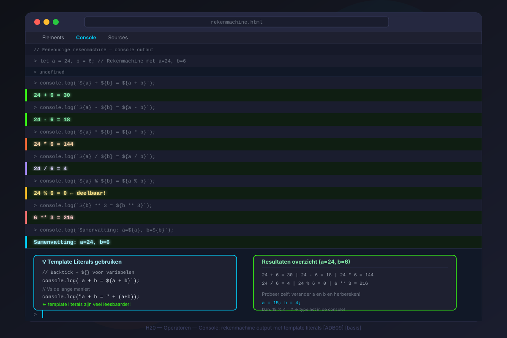

H20 — App-ontwikkeling 5ADB
Operatoren
ADB09De leerlingen ontwikkelen oplossingen voor concrete problemen.
🎯 Leerdoelen
- Je kan alle wiskundige operatoren gebruiken in JavaScript (
+,-,*,/,%,**) - Je kan de operator-prioriteit toepassen en haakjes gebruiken
- Je kan strings samenvoegen via concatenatie én via template literals
- Je kan toewijzingsoperatoren gebruiken (
+=,-=,*=,/=) - Je kan de increment (
++) en decrement (--) operatoren toepassen - Je kan de basishelpers van het
Math-object gebruiken
1. Wiskundige operatoren
JavaScript
let a = 10;
let b = 3;
console.log(a + b); // 13 — optelling
console.log(a - b); // 7 — aftrekking
console.log(a * b); // 30 — vermenigvuldiging
console.log(a / b); // 3.3333... — deling
console.log(a % b); // 1 — modulo (rest bij deling)
console.log(a ** b); // 1000 — machtsverheffing: 10³1.1 Modulo % — de rest
Modulo (%) geeft de rest bij een gehele deling. Handig voor:
- Controleren of een getal even of oneven is:
getal % 2 === 0→ even - Werken met uren of minuten (na 60 minuten → terug naar 0)
JavaScript
console.log(10 % 3); // 1 (10 = 3×3 + 1)
console.log(8 % 2); // 0 (even getal)
console.log(7 % 2); // 1 (oneven getal)2. Operator-prioriteit
JavaScript
console.log(2 + 3 * 4); // 14 — niet 20! Eerst 3 * 4 = 12, dan 2 + 12
console.log(10 - 4 / 2); // 8 — niet 3! Eerst 4 / 2 = 2, dan 10 - 2
// Gebruik haakjes om de volgorde te bepalen:
console.log((2 + 3) * 4); // 20
console.log((10 - 4) / 2); // 3💡 Tip
Twijfel je over de volgorde? Zet haakjes. Ze kosten niets en voorkomen fouten.

3. Het Math-object
3.1 Afronden
JavaScript
console.log(Math.round(4.5)); // 5 — standaard afronden
console.log(Math.round(4.4)); // 4
console.log(Math.floor(4.9)); // 4 — altijd naar beneden
console.log(Math.ceil(4.1)); // 5 — altijd naar boven3.2 Willekeurig getal — Math.random()
JavaScript
// Willekeurig getal van 1 tot en met 6 (dobbelsteen):
let dobbelsteen = Math.floor(Math.random() * 6) + 1;
console.log(dobbelsteen); // 1, 2, 3, 4, 5 of 6
// Algemene formule van min tot en met max:
let willekeurig = Math.floor(Math.random() * (max - min + 1)) + min;4. String-concatenatie vs template literals
JavaScript
let naam = "Lena";
let leeftijd = 17;
// Oude manier — omslachtig:
let zin1 = "Hallo, ik ben " + naam + " en ik ben " + leeftijd + " jaar oud.";
// Moderne manier — template literal:
let zin2 = `Hallo, ik ben ${naam} en ik ben ${leeftijd} jaar oud.`;
// Berekeningen in template literals:
let a = 5;
let b = 3;
console.log(`${a} + ${b} = ${a + b}`); // 5 + 3 = 8
console.log(`Afgerond: ${Math.round(3.7)}`); // Afgerond: 4
5. Toewijzingsoperatoren
JavaScript
let score = 10;
score += 5; // score = score + 5 → score is nu 15
score -= 3; // score = score - 3 → score is nu 12
score *= 2; // score = score * 2 → score is nu 24
score /= 4; // score = score / 4 → score is nu 6
score **= 2; // score = score ** 2 → score is nu 36
score %= 5; // score = score % 5 → score is nu 16. Increment en decrement
| Operator | Naam | Wat het doet |
|---|---|---|
++ | Increment | Verhoog de variabele met 1 |
-- | Decrement | Verlaag de variabele met 1 |
JavaScript
let teller = 0;
teller++;
console.log(teller); // 1
teller++;
console.log(teller); // 2
teller--;
console.log(teller); // 1
Oefeningen
ADB09
Oefening 1 — Eenvoudige rekenmachine
Maak een bestand rekenmachine.html dat twee getallen van de gebruiker opvraagt en de vier basisbewerkingen toont.
- Vraag twee getallen op via
prompt()— gebruikparseFloat() - Controleer of de invoer geldig is met
isNaN() - Toon het resultaat van optelling, aftrekking, vermenigvuldiging en deling
- Gebruik template literals voor de uitvoer
- Controleer of de tweede waarde nul is bij deling

Huistaak
📋 Huistaak — Operatoren
Opdracht: Uitgebreide rekenmachine
- Deel 1 — Basis (3 punten): Vraag via
prompt()twee getallen. Toon optelling, aftrekking, vermenigvuldiging en deling. Gebruik template literals. Controleer deling door nul. - Deel 2 — Uitgebreid (3 punten): Voeg ook modulo (
%) en machtsverheffing (**) toe. Rond alle resultaten af op 2 decimalen met.toFixed(2). - Deel 3 — Math-object (4 punten): Voeg een sectie toe die
Math.round(),Math.floor(),Math.ceil()toont op het eerste getal. Genereer ook een willekeurig geheel getal tussen de twee ingevoerde getallen.
Vragenlijst
Controleer of je de leerstof van dit hoofdstuk begrijpt.
Quiz
H20 — Operatoren
Vraag 1
Wat is het resultaat van 10 % 3?
Vraag 2
Wat is het resultaat van 2 + 3 * 4 in JavaScript?
Vraag 3
Wat doet score += 5?
Vraag 4
Welke Math-functie rondt altijd naar beneden af?
Vraag 5
Wat doet de operator ** in JavaScript?
Vraag 6
Wat geeft Math.random() terug?